AULA 09 — MONTAGEM COMPLETA DE UM COMPUTADOR
1. Introdução
A montagem de um computador é a aplicação prática de tudo que foi estudado nas aulas anteriores. Cada decisão tomada durante a montagem tem base em conceitos já vistos: compatibilidade de sockets, trilhos de tensão, fluxo de ar, fixação de componentes e organização de cabos.
Objetivo desta aula: executar a montagem completa de um computador desktop na sequência correta, com os procedimentos de segurança e qualidade adequados a um técnico de informática.
2. Antes de Começar — Preparação de Bancada
Uma montagem bem-feita começa antes de tocar em qualquer componente.
2.1 Organização do espaço
- Utilizar uma bancada limpa, seca e iluminada.
- Separar todos os componentes e verificar se estão presentes: placa-mãe, CPU, cooler, RAM, armazenamento, fonte, gabinete, cabos e parafusos.
- Manter as caixas e embalagens próximas — os manuais serão consultados durante a montagem.
- Separar as ferramentas: chave Phillips número 2 (principal), chave Phillips número 1 (parafusos menores) e pinça de ponta fina (opcional, para parafusos em locais de difícil acesso).
2.2 Descarga eletrostática (ESD)
Componentes eletrônicos são sensíveis à descarga eletrostática — uma corrente invisível que pode danificar chips sem deixar marca visível.
- Utilizar pulseira antiestática conectada a uma superfície aterrada sempre que possível.
- Na ausência da pulseira: tocar em uma superfície metálica aterrada (como o chassi metálico do gabinete desconectado da tomada) antes de manipular cada componente.
- Nunca manusear componentes pela face de circuitos — sempre pelas bordas.
- Manter os componentes nas embalagens antiestáticas (sacos metalizados) até o momento do uso.
2.3 O que nunca fazer
- Nunca montar com a fonte conectada à tomada.
- Nunca forçar conectores, parafusos ou componentes — se não encaixa com suavidade, rever o alinhamento.
- Nunca apertar parafusos da placa-mãe com força excessiva — a PCB pode rachar.
3. Sequência de Montagem
A sequência abaixo foi definida para minimizar retrabalho e facilitar o acesso aos componentes em cada etapa.
Etapa 1 — Instalação do processador na placa-mãe
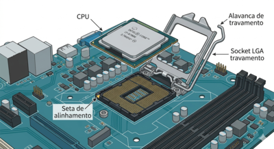
Por que primeiro: é muito mais fácil instalar a CPU com a placa-mãe fora do gabinete, sobre uma superfície plana.
- Retirar a placa-mãe da embalagem antiestática e posicioná-la sobre a própria embalagem ou sobre uma superfície não condutora.
- Localizar o socket da CPU e identificar o mecanismo de travamento (alavanca para LGA Intel / alavanca ZIF para AMD PGA / mecanismo de pressão para AMD AM5 LGA).
- Abrir o mecanismo de travamento conforme o tipo de socket.
- Intel LGA: remover a tampa plástica protetora dos pinos (guardar — alguns fabricantes exigem para RMA). Alinhar a CPU pela seta indicadora no canto e pelo entalhe lateral. Baixar a CPU verticalmente sem deslizar. Fechar a alavanca — exigirá leve pressão, isso é normal.
- AMD AM4 (PGA): alinhar pelo triângulo dourado no canto da CPU com o triângulo no socket. Encaixar verticalmente sem pressão lateral. Travar a alavanca.
- AMD AM5 (LGA): alinhar pelos entalhes laterais. Baixar a CPU e fechar o mecanismo de pressão.
⚠️ Nunca deslizar a CPU sobre os pinos. O movimento deve ser sempre vertical. Um pino dobrado pode inutilizar a placa-mãe ou o processador.
Etapa 2 — Instalação da memória RAM
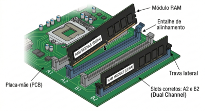
- Consultar o manual da placa-mãe para identificar os slots corretos para dual channel (geralmente A2 e B2).
- Abrir as travas laterais dos slots selecionados.
- Alinhar o entalhe do módulo com a protuberância do slot — só encaixa em uma direção.
- Pressionar firmemente e de forma uniforme nas duas extremidades até as travas fecharem com um clique audível.
- Verificar visualmente que as travas estão completamente fechadas nos dois lados.
💡 Se instalar apenas um módulo nesta etapa (para teste inicial), usar o slot A2 ou B2 conforme o manual — nunca o slot A1.
Etapa 3 — Instalação do cooler da CPU
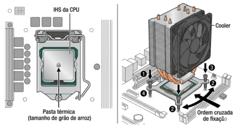
- Verificar se o cooler é compatível com o socket instalado.
- Aplicar pasta térmica: uma gota do tamanho de um grão de arroz no centro do IHS (tampa metálica da CPU). Não espalhar.
- Cooler de caixa (stock): encaixar os quatro pinos de pressão nos furos da placa-mãe em diagonal. Pressionar cada pino até ouvir o clique de travamento. Verificar que os quatro pinos estão travados e o cooler não balança.
- Cooler aftermarket com backplate: fixar o backplate na parte traseira da placa-mãe. Posicionar o cooler sobre a CPU e fixar os parafusos em ordem cruzada (diagonal a diagonal) em múltiplas passagens — nunca apertar um parafuso completamente antes dos outros.
- Conectar o cabo do fan do cooler no header CPU_FAN da placa-mãe.
⚠️ Cooler mal fixado (com folga ou inclinado) resulta em contato irregular com o IHS e superaquecimento imediato. Verificar firmeza antes de prosseguir.
Etapa 4 — Preparação do gabinete
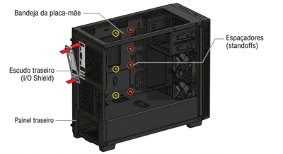
- Remover os painéis laterais do gabinete.
- Identificar o padrão de furos da bandeja (ATX, mATX ou ITX) e instalar os standoffs (espaçadores) nos furos correspondentes ao form factor da placa-mãe. Consultar o manual do gabinete para o mapa de furos.
- Verificar que não há standoffs em posições sem furo correspondente na placa-mãe — causaria curto-circuito.
- Instalar o I/O shield (escudo traseiro) da placa-mãe no recorte do painel traseiro do gabinete. Pressionar nas bordas até encaixar completamente. As abas metálicas internas devem apontar para dentro do gabinete.
- Instalar os fans de gabinete nas posições definidas na Aula 08: frente como intake, traseira como exhaust. Conectar os cabos dos fans nos headers SYS_FAN da placa-mãe ou no controlador de fans do gabinete.
Etapa 5 — Instalação da placa-mãe no gabinete
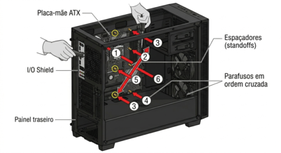
- Segurar a placa-mãe pelas bordas e posicioná-la no gabinete alinhando as saídas traseiras (USB, áudio, rede) com o I/O shield instalado.
- Verificar que todos os furos da placa-mãe estão alinhados com os standoffs.
- Inserir e apertar os parafusos da placa-mãe em ordem cruzada — começar pelos cantos, depois os do centro. Apertar com firmeza mas sem força excessiva.
- Verificar que as abas do I/O shield não estão cobrindo as portas traseiras.
Etapa 6 — Instalação do armazenamento
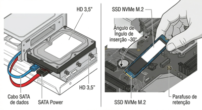
HD, SSD 2,5"/3,5 SATA ou NVMe:
- Fixar o dispositivo na baia correspondente com os parafusos laterais (HD 3,5") ou com adaptador (SSD 2,5" em baia 3,5").
- Conectar o cabo SATA de dados entre o dispositivo e um conector SATA da placa-mãe. Preferir as portas SATA_1 ou SATA_2 (geralmente controladas diretamente pelo chipset).
- Passar o cabo SATA pela parte traseira da bandeja se o gabinete permitir.
SSD NVMe M.2:
- Localizar o slot M.2 na placa-mãe e remover o parafuso de retenção.
- Remover o dissipador M.2 se presente (e a película protetora da almofada térmica).
- Inserir o SSD no slot em ângulo de ~30°, alinhando o entalhe.
- Abaixar o SSD e fixar com o parafuso de retenção.
- Reinstalar o dissipador M.2.
Etapa 7 — Instalação da fonte de alimentação
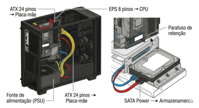
- Posicionar a fonte no compartimento do gabinete (geralmente inferior) com a grade de ventilação voltada para baixo (se o gabinete tiver abertura inferior com filtro de poeira) ou para cima (se não houver).
- Fixar a fonte com os quatro parafusos no painel traseiro do gabinete.
- Ainda não conectar os cabos — isso é feito na próxima etapa.
Etapa 8 — Conexão dos cabos da fonte
- ATX 24 pinos → conector principal da placa-mãe. Encaixar até o clique de travamento.
- EPS 4+4 ou 8 pinos (CPU) → conector de alimentação da CPU, geralmente no canto superior esquerdo da placa-mãe. Rotear o cabo pela parte traseira da bandeja se possível.
- SATA Power → dispositivos de armazenamento instalados na Etapa 6.
- PCIe 6+2 ou 8 pinos → apenas se houver placa de vídeo dedicada (instalada na Etapa 9).
⚠️ O cabo EPS da CPU é frequentemente esquecido por iniciantes. Sem ele, o sistema não realiza POST.
Etapa 9 — Instalação de placa de vídeo dedicada (se houver)
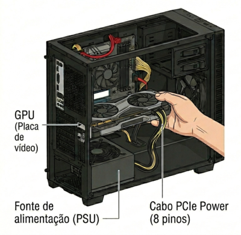
- Remover a(s) tampa(s) metálica(s) do painel traseiro do gabinete correspondentes ao slot PCIe x16 que será utilizado.
- Abrir a trava do slot PCIe x16 na placa-mãe.
- Alinhar a GPU com o slot e pressionar firmemente até a trava fechar com clique.
- Fixar o suporte traseiro da GPU ao gabinete com parafusos.
- Conectar os cabos PCIe Power da fonte (6+2 ou 8 pinos) nos conectores da GPU.
Etapa 10 — Conexão dos cabos do front panel
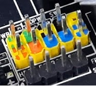
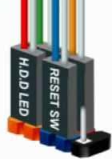
Esta é a etapa que mais exige consulta ao manual — os conectores são pequenos e a ordem dos pinos varia por fabricante.
| Cabo | Função | Observação |
|---|---|---|
| Power SW | Botão ligar/desligar | Sem polaridade — qualquer orientação |
| Reset SW | Botão reset | Sem polaridade |
| Power LED +/- | LED de energia | Com polaridade — positivo no pino marcado |
| HDD LED +/- | LED de atividade do armazenamento | Com polaridade |
Cabos adicionais:
- USB 2.0 interno → header USB 2.0 da placa-mãe
- USB 3.0 interno → header USB 3.0 (conector azul maior)
- Áudio frontal (AAFP) → header de áudio da placa-mãe
💡 Se o LED de power não acender após a montagem mas o sistema funcionar normalmente, verificar a polaridade do conector Power LED — inverter a conexão resolve.
Etapa 11 — Cable Management
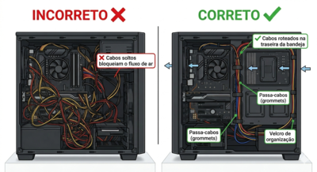
- Reunir os cabos excedentes e roteá-los pela parte traseira da bandeja através dos passa-cabos.
- Agrupar cabos por destino e fixar com abraçadeiras de velcro.
- Verificar que nenhum cabo está próximo a fans em movimento.
- Cabos de fonte não utilizados (em fontes não modulares): dobrar e fixar em local que não bloqueie o fluxo de ar.
Etapa 12 — Verificação pré-energização
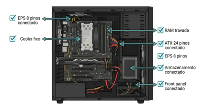
Antes de conectar a fonte à tomada, realizar uma revisão completa:
- CPU instalada e cooler firmemente fixado
- Fan do cooler conectado no CPU_FAN
- RAM encaixada com travas fechadas nos dois lados
- Placa-mãe fixada sobre todos os standoffs
- ATX 24 pinos conectado
- EPS 8 pinos da CPU conectado
- Armazenamento conectado (dados e alimentação)
- Cabos do front panel conectados (especialmente Power SW)
- Nenhum cabo solto próximo a fans
- Nenhuma ferramenta ou parafuso solto dentro do gabinete
⚠️ Um parafuso solto dentro do gabinete pode causar curto-circuito ao tocar a PCB da placa-mãe durante o transporte ou vibração. Verificar visualmente e inclinar levemente o gabinete antes de fechar.
Etapa 13 — Primeiro teste (fora do gabinete ou com painel aberto)
- Conectar o monitor na saída de vídeo (GPU dedicada ou saída integrada da placa-mãe).
- Conectar teclado e mouse.
- Conectar o cabo de força na fonte e ligar a chave traseira da fonte (posição I).
- Pressionar o botão Power do gabinete.
- Observar: fans da CPU, gabinete e GPU devem girar; LEDs da placa-mãe devem acender (se presentes); monitor deve exibir a tela de POST ou logotipo do fabricante.
Se o sistema não ligar:
- Verificar chave da fonte (posição I)
- Verificar conector Power SW no F_PANEL
- Verificar cabo EPS da CPU
- Verificar RAM encaixada completamente
Se ligar mas não houver imagem:
- Verificar cabo do monitor conectado na saída correta (GPU dedicada, não onboard, se houver GPU)
- Verificar RAM no slot correto
- Ouvir bipes de POST — código de bipes indica o componente com problema
Síntese da Aula
| Etapa | Componente | Ponto crítico |
|---|---|---|
| 1 | CPU | Movimento vertical; nunca deslizar |
| 2 | RAM | Slots corretos para dual channel; travas fechadas |
| 3 | Cooler | Pasta térmica; fixação firme e uniforme |
| 4 | Gabinete | Standoffs corretos; I/O shield instalado |
| 5 | Placa-mãe | Alinhamento com I/O shield; parafusos em cruzado |
| 6 | Armazenamento | Cabo de dados + alimentação |
| 7 | Fonte | Grade de ventilação para o lado correto |
| 8 | Cabos da fonte | EPS da CPU é o mais esquecido |
| 9 | GPU | Trava do slot PCIe; cabos PCIe Power |
| 10 | Front panel | Consultar manual; polaridade dos LEDs |
| 11 | Cable management | Cabos longe dos fans |
| 12 | Verificação | Checklist antes de energizar |
| 13 | Primeiro teste | Fans giram + imagem no monitor = POST bem-sucedido |